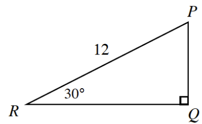
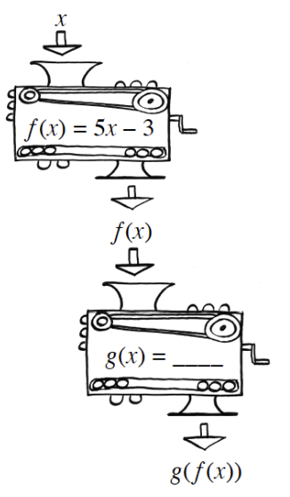

Let \(f(x)=2x^2-5\) and \(g(x)=3x-1\). Evaluate:
\(f(g(2))\)
\(g(f(-1))\)
\(f(g(x))\)
\(g(f(x))\)
Solve for \(x\): \(k=\frac{3x+2}{x-1}\)
Graph \(y=(x+2)^3\). How does your graph compare to the graph of \(y=x^3\)?
In this course, you will need to rationalize the denominator (make the denominator a rational number) of fractions with radicals in the denominator. Before calculators, there was good reason to rationalize denominators—all calculations had to be done by hand. Consider dividing \(1\) by \(\sqrt { 3 }\), or \(\frac { 1 } { \sqrt { 3 } }\). What about dividing \(\sqrt { 3 }\) by \(3\), or \(\frac { \sqrt { 3 } } { 3 }\)? Since \(\frac { \sqrt { 3 } } { 3 }\) was a more useful form, it became the standard form. Use the following method to rationalize the denominator of each radical expression below: \(\frac{1}{\sqrt{3}}·\frac{\sqrt{3}}{\sqrt{3}}=\frac{\sqrt{3}}{3}\).
\(\frac { 2 } { \sqrt { 3 } }\)
\(\frac { 2 } { \sqrt { 2 } }\)
\(\frac { 2 } { 3 \sqrt { 5 } }\)
Use the triangle at right to answer the following questions.
What kind of a special triangle is this?
What is the exact length of \(\overline{PQ}\)?
What is the exact length of side \(\overline{QR}\)?
Write and simplify the sine ratio for \(∠P\). Leave in simplified radical form.

Consider the function \(f(x)=5x-3\).
Describe, in words, what the function does to any input.
List steps, in order, that will “undo” the function.
Write an equation for the steps you wrote in part (b).
Name this equation \(g\).
What happens if you compose \(f\) and \(g\)? Use the function machine diagram at right to evaluate \(g(f(5))\). Explain why your answer makes sense.

For what values of \(x\) is \(\sqrt { 3 - x }\) a real number?